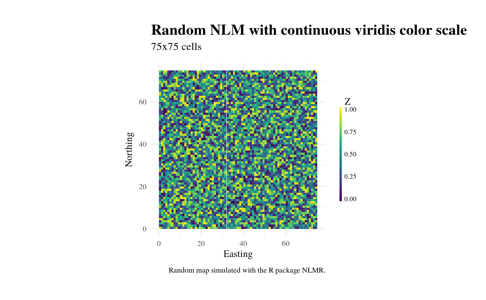
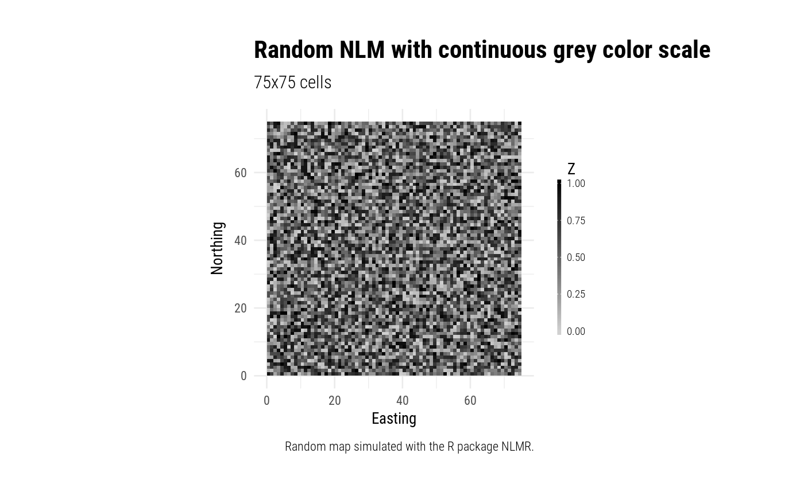
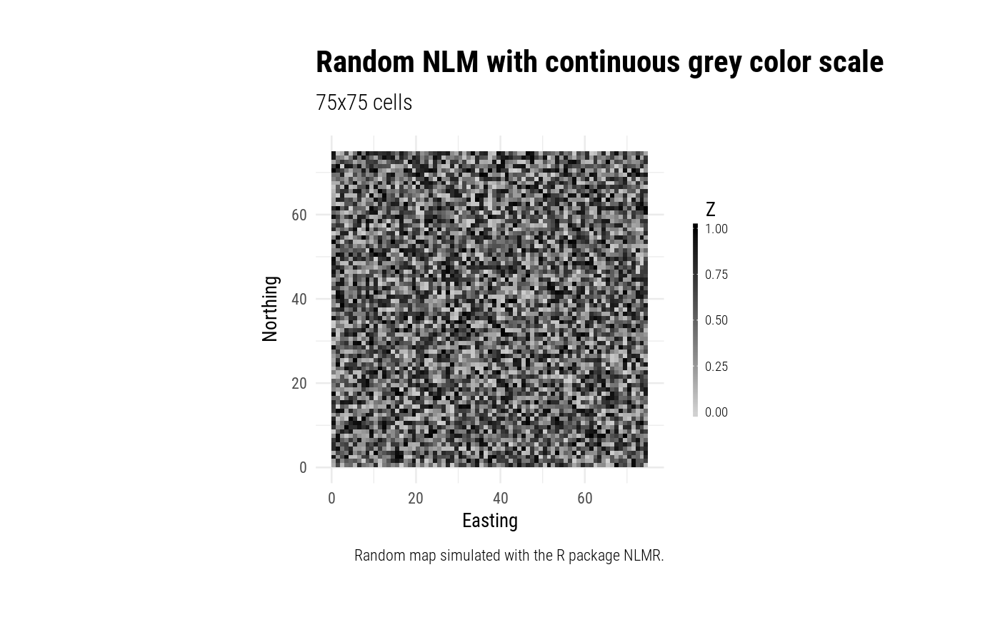
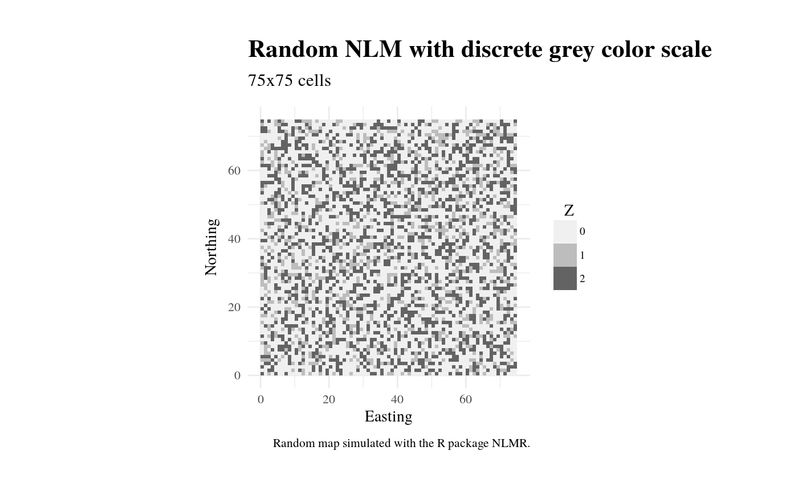

Opinionated ggplot2 theme to visualize NLM raster.
theme_nlm(base_family = "serif", base_size = 11.5, plot_title_family = "serif", plot_title_size = 18, plot_title_face = "bold", plot_title_margin = 10, subtitle_family = "serif", subtitle_size = 13, subtitle_face = "plain", subtitle_margin = 15, strip_text_family = base_family, strip_text_size = 12, strip_text_face = "plain", caption_family = "serif", caption_size = 9, caption_face = "plain", caption_margin = 10, legend_title = "Z", plot_margin = ggplot2::margin(30, 30, 30, 30), ratio = 1, viridis_scale = "D") theme_nlm_discrete(base_family = "serif", base_size = 11.5, plot_title_family = base_family, plot_title_size = 18, plot_title_face = "bold", plot_title_margin = 10, subtitle_family = "serif", subtitle_size = 13, subtitle_face = "plain", subtitle_margin = 15, strip_text_family = base_family, strip_text_size = 12, strip_text_face = "plain", caption_family = "serif", caption_size = 9, caption_face = "plain", caption_margin = 10, legend_title = "Z", legend_labels = NULL, plot_margin = ggplot2::margin(30, 30, 30, 30), ratio = 1, viridis_scale = "D") theme_nlm_grey(base_family = "serif", base_size = 11.5, plot_title_family = base_family, plot_title_size = 18, plot_title_face = "bold", plot_title_margin = 10, subtitle_family = "serif", subtitle_size = 13, subtitle_face = "plain", subtitle_margin = 15, strip_text_family = base_family, strip_text_size = 12, strip_text_face = "plain", caption_family = "serif", caption_size = 9, caption_face = "plain", caption_margin = 10, legend_title = "Z", plot_margin = ggplot2::margin(30, 30, 30, 30), ratio = 1, viridis_scale = "D") theme_nlm_grey_discrete(base_family = "serif", base_size = 11.5, plot_title_family = base_family, plot_title_size = 18, plot_title_face = "bold", plot_title_margin = 10, subtitle_family = "serif", subtitle_size = 13, subtitle_face = "plain", subtitle_margin = 15, strip_text_family = base_family, strip_text_size = 12, strip_text_face = "plain", caption_family = "serif", caption_size = 9, caption_face = "plain", caption_margin = 10, legend_title = "Z", legend_labels = NULL, plot_margin = ggplot2::margin(30, 30, 30, 30), ratio = 1, viridis_scale = "D")
| base_family | [ |
|---|---|
| base_size | [ |
| plot_title_family | [ |
| plot_title_size | [ |
| plot_title_face | [ |
| plot_title_margin | [ |
| subtitle_family | [ |
| subtitle_size | [ |
| subtitle_face | [ |
| subtitle_margin | [ |
| strip_text_family | [ |
| strip_text_size | [ |
| strip_text_face | [ |
| caption_family | [ |
| caption_size | [ |
| caption_face | [ |
| caption_margin | [ |
| legend_title | [ |
| plot_margin | [ |
| ratio | [ |
| viridis_scale | [ |
| legend_labels | [ |
A focused theme to visualize raster data that sets a lot of defaults for the
ggplot2::theme.
The theme can make use of the Roboto Condensed font (Open Source font from
Google).
If your local font library does not contain Roboto as a font, you can
import it via util_import_roboto_condensed (highly recommended).
The functions are setup in such a way that you can customize your own one by just wrapping the call and changing the parameters. The theme itself is heavily influenced by hrbrmstr and his package hrbrthemes (https://github.com/hrbrmstr/hrbrthemes/).
# nolint start# simulate NLM x <- nlm_random(ncol = 75, nrow = 75) # classify y <- c(0.5, 0.15, 0.25) y <- util_classify(x, y, c("1", "2", "3")) # color + continuous rasterVis::gplot(x) + ggplot2::geom_tile(ggplot2::aes(fill = value)) + ggplot2::labs(x = "Easting", y = "Northing") + theme_nlm() + ggplot2::ggtitle("Random NLM with continuous viridis color scale", subtitle = "75x75 cells") + ggplot2::labs(caption = "Random map simulated with the R package nlmr.")#> Warning: partial argument match of 'length' to 'length.out'# grey + continuous rasterVis::gplot(x) + ggplot2::geom_tile(ggplot2::aes(fill = value)) + ggplot2::labs(x = "Easting", y = "Northing") + theme_nlm_grey() + ggplot2::ggtitle("Random NLM with continuous grey color scale", subtitle = "75x75 cells") + ggplot2::labs(caption = "Random map simulated with the R package nlmr.")#> Warning: partial argument match of 'length' to 'length.out'# color + discrete rasterVis::gplot(y) + ggplot2::geom_tile(ggplot2::aes(fill = factor(value))) + ggplot2::labs(x = "Easting", y = "Northing") + theme_nlm_discrete() + ggplot2::ggtitle("Random NLM with discrete viridis color scale", subtitle = "75x75 cells") + ggplot2::labs(caption = "Random map simulated with the R package nlmr.")# grey + discrete rasterVis::gplot(y) + ggplot2::geom_tile(ggplot2::aes(fill = factor(value))) + ggplot2::labs(x = "Easting", y = "Northing") + theme_nlm_grey_discrete() + ggplot2::ggtitle("Random NLM with discrete grey color scale", subtitle = "75x75 cells") + ggplot2::labs(caption = "Random map simulated with the R package nlmr.")# nolint end